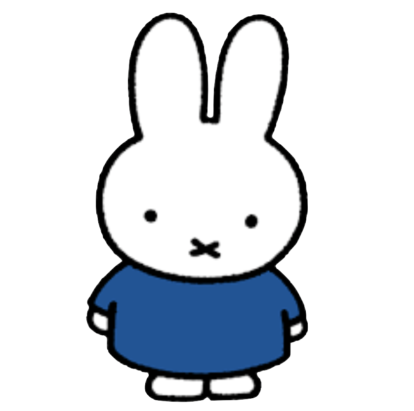

Welcome to Emaans Website 
Hey! I'm Emaan. I'm a student at the University of Technology Sydney, studying in the Engineering and IT faculty. This site is part of my Web Systems assignment, where I've been asked to build a personal website using only HTML and CSS. Through this project, I'll be sharing a bit about my journey with computing, how I got started, what I've learned so far, and where I see myself heading in the future. I'll also explain some of the design choices I made while building this site, including how I approached structure, styling, and accessibility. This assignment gave me a chance to put my coding skills into practice and explore how websites are built from the ground up. I'm still learning, but I've enjoyed the process of creating something from scratch. Feel free to click around and learn more about me and my goals in tech.
My Other Subjects This Semester
- 24109 Marketing and Customer Value
- 26134 Business Statistics (Responsible Evidence-Based Decisions)
- 33116 Design, Data, and Decisions